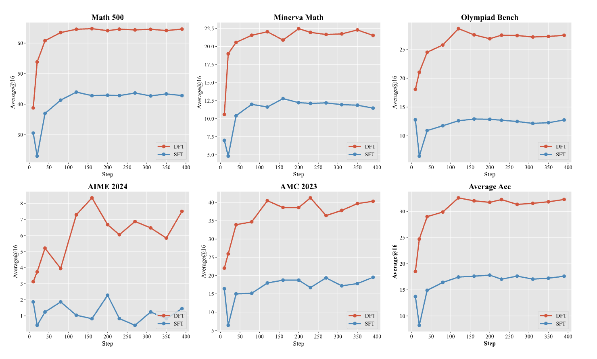
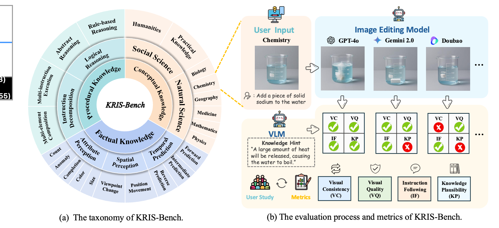
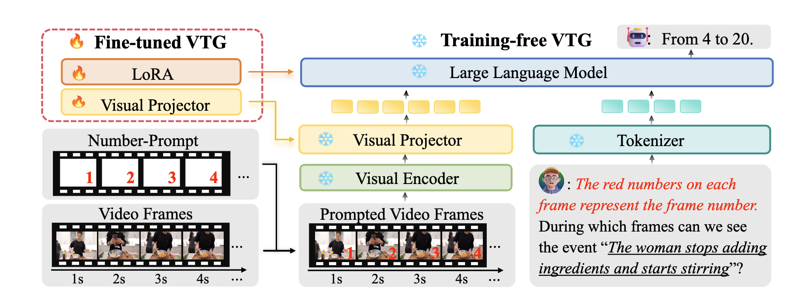
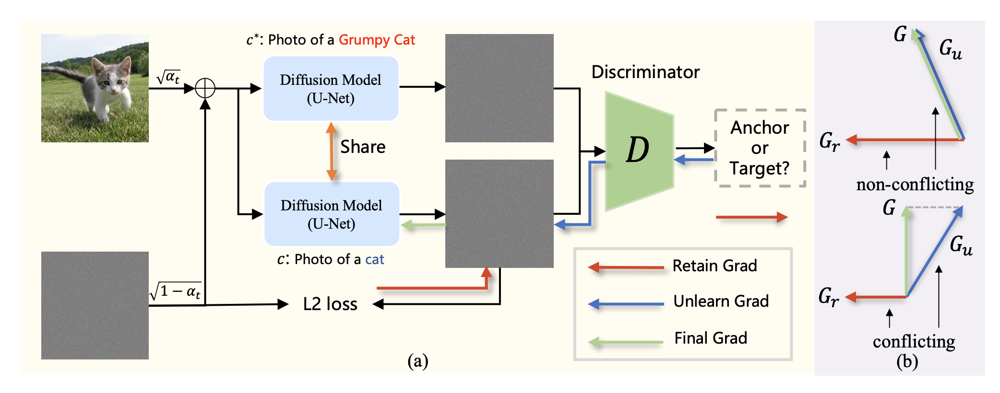
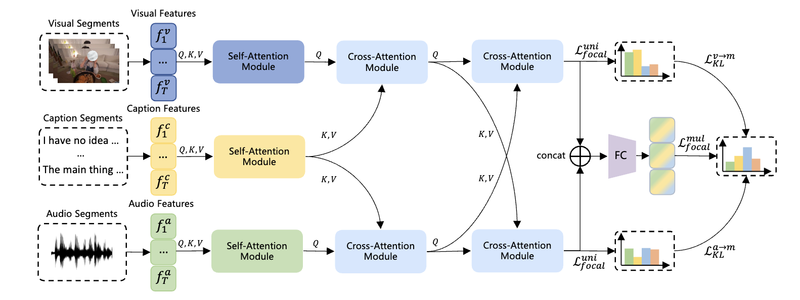
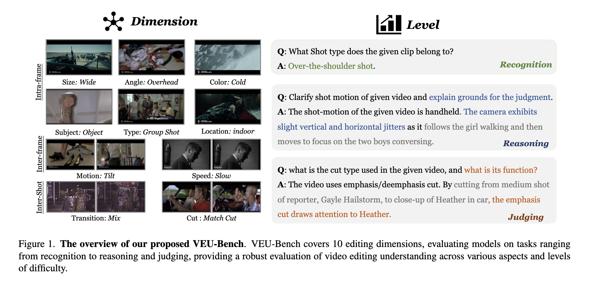
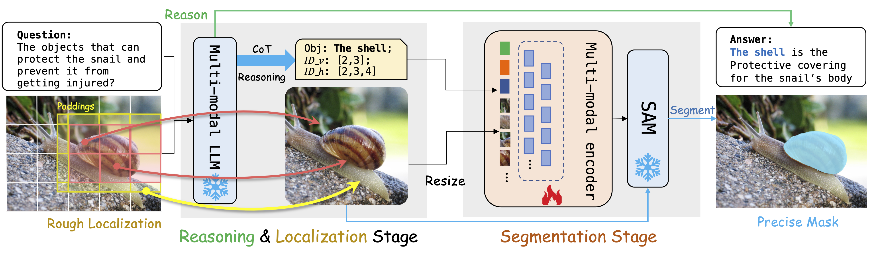

About
Wenbo (Vito) Zhu
Founding AI Lead & Head of AI Research at OpusClip. Joined when the team had ~5 engineers, pivoted, and now lead a 30+ cross-functional AI team delivering next-generation multimodal & generative video products.
I initiated, led, and shipped flagship systems including: OpusClip · ClipAnything · Agent Opus
Before OpusClip: Senior ML Engineer at ByteDance/TikTok — founding engineer of Gauthmath (100M+ downloads, world’s first AI geometry solver). Earlier: Research Scientist at Cloudwalk Technology — billion-scale face clustering engine deployed across 10+ cities (patented).
Both OpusClip and Gauthmath recognized by Andreessen Horowitz (a16z) as Top 50 GenAI Apps · MSc (OR) UC Berkeley · BSc (IE & Math) Beihang University
Career
Timeline
-
2022 – Present
Founding AI Lead & Head of AI Research
OpusClip — building next-gen multimodal video products
-
2020 – 2022
Senior ML Engineer
ByteDance / TikTok — founding engineer of Gauthmath
-
2019 – 2020
Research Scientist
Cloudwalk Technology — billion-scale face clustering
Research
Interests
- Multimodal Video Intelligence — understanding, reasoning, and editing for video content
- Agentic Systems — LLM-based planning, tool use, and evaluation frameworks
- Generative Media — automatic video repurposing and multimodal content creation
News
Updates
- [Jan. 2026] One paper accepted to ICLR 2026.
- [Sept 2025] Two papers accepted to NeurIPS 2025.
- [May 2025] One paper accepted to ACL 2025.
- [Feb 2025] Two papers accepted to CVPR 2025, including One Highlight.
- [Jan 2025] Journal paper accepted to BIT.
- [Dec 2024] Two papers accepted to AAAI 2025.
- [Nov 2024] Co-authored with Google AI: "OpusClip achieves 30% cost savings with Gemini Flash"
- [Feb 2024] Journal paper accepted to IJHCI.
Publications
Publications
-

ICLRInternational Conference on Learning Representations (ICLR), 2026. -

NeurIPSAdvances in Neural Information Processing Systems (NeurIPS), 2025. -

CVPRIEEE/CVF Conference on Computer Vision and Pattern Recognition (CVPR), 2025. -

AAAIUnlearning Concepts in Diffusion Model via Concept Domain Correction and Concept Preserving GradientAAAI Conference on Artificial Intelligence (AAAI), 2025. -

AAAIAAAI Conference on Artificial Intelligence (AAAI), 2025. -

CVPRIEEE/CVF Conference on Computer Vision and Pattern Recognition (CVPR), 2025. -

ACLAnnual Meeting of the Association for Computational Linguistics (ACL), 2025.
Awards
Recognition
- 🥈[Oct 2025] 2nd Place — Perception Test Challenge 2025 (Task 5: Hour-Long Video QA)
- 🥉[Aug 2025] 3rd Place — CVPR 2025 SoccerNet Challenge (Multi-View Foul Recognition)
- 🥇[Jun 2025] 1st Place — CVPR 2025 VidLLMs Challenge (Multilingual Video Reasoning)
- 🥈[Jun 2025] 2nd Place — CVPR 2025 VidLLMs Challenge (Complex Video Reasoning & Robustness)
- 🏆[Oct 2024] Winner — ECCV 2024 Perception Challenge (Hour-Long Video QA)
- 🏆[Jun 2024] Winner — CVPR 2024 LOVEU Workshop (Long-Term Video QA)
- 🥈[2020] Kaggle ASHRAE Great Energy Predictor III — Silver Medal (Top 2%)